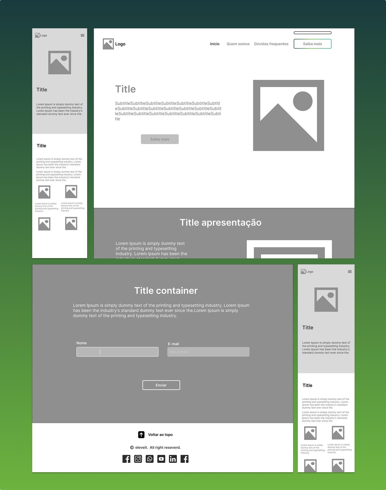
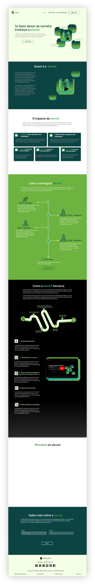
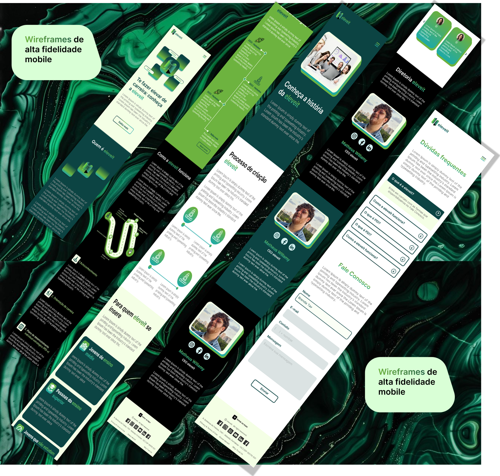
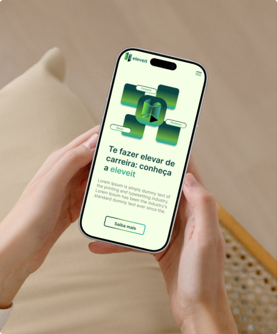
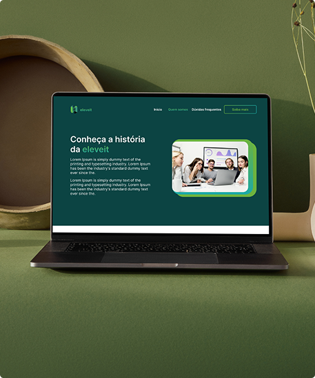
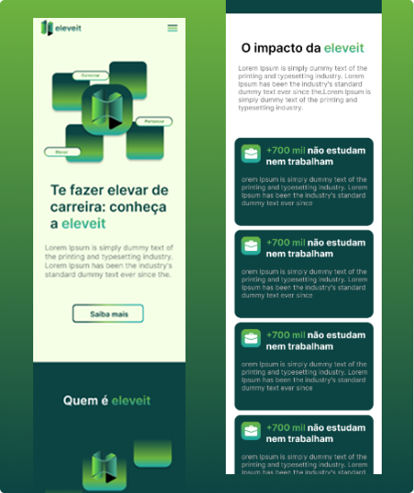
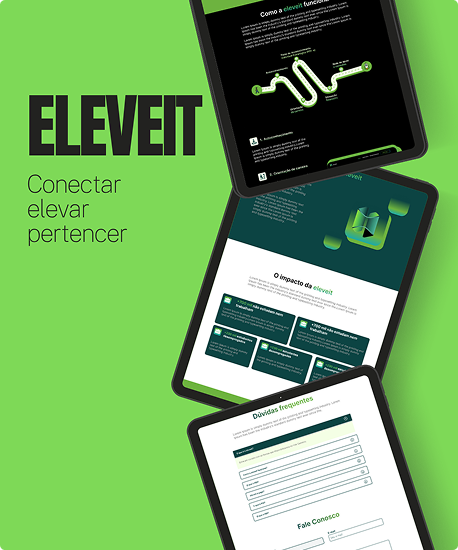
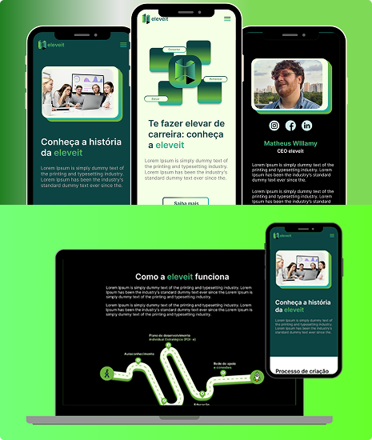

.png)
O AJDC Clean Energy é um ecossistema de gestão inteligente desenvolvido sob medida para o setor de energia solar. O projeto nasceu com o desafio de centralizar processos administrativos que eram fragmentados, manuais e burocráticos, transformando-os em uma jornada digital fluida e intuitiva. Minha missão foi projetar uma interface que reduzisse a carga cognitiva da equipe financeira, integrando desde o cadastro dinâmico de clientes até a automação de faturas conectadas diretamente aos sistemas bancários. O resultado é uma ferramenta que não apenas organiza dados, mas acelera a geração de receita e oferece visibilidade estratégica em tempo real.
Atuei desde a fase de Engenharia de Requisitos, mapeando processos internos e fluxos de usuário, até a entrega final do código. A solução centraliza o controle de faturas e boletos através de uma arquitetura baseada em APIs personalizadas, integrando automações via IA (n8n) para uma gestão financeira sem falhas humanas
AJDC Clean Energy
Fortaleza, CE - BRA
Site
Product Designer & Front-end Developer
Eliminar o 'gargalo' operacional. A empresa perdia horas valiosas em preenchimentos manuais e consultas dispersas. O objetivo técnico era criar uma arquitetura de informação onde o administrador pudesse realizar ações complexas (como como cadastrar clientes, fazer consultas, criar faturas, e ter acesso á métricas importantes) em poucos cliques, sem margem para erros.
Cadastro de clientes e faturas, consultas relacionadas aos mesmos, desenvolvimento de um Dashboard Administrativo, fluxos de faturamento automatizados, sistema de filtros avançados para consulta de pagamentos e uma central de documentação/tutoriais integrada para facilitar o onboarding de novos colaboradores.
Cada elemento visual foi pensado para minimizar erros operacionais, garantindo que a gestão de centenas de clientes e faturas fosse realizada de forma ágil e segura, reduzindo a curva de aprendizado e fricção para os usuários finais. O objetivo era alcançar eficiência máxima com o mínimo de esforço cognitivo.
Fui responsável pela implementação completa do front-end utilizando FlutterFlow, garantindo fidelidade absoluta ao design e performance escalável. O diferencial técnico deste projeto foi a integração via APIs REST, onde trabalhei em colaboração direta com o desenvolvedor back-end para o consumo de dados em tempo real. Foi implementada toda a lógica de exibição de faturas e dashboards, além da estrutura da interface para interagir com automações de IA (n8n), entregando um produto funcional e pronto para operação.
.png)
Aumento de 300% na eficiência de cadastro. Através da unificação de ferramentas e automação de cálculos matemáticos complexos, o tempo médio para registro de clientes e faturas foi reduzido drasticamente, tornando o fluxo de trabalho 3x mais ágil e prático.
Redução de 'Gargalos' Invisíveis. As entrevistas qualitativas com colaboradores permitiram mapear dores operacionais que não haviam sido diagnosticadas. O resultado foi a criação de funcionalidades inéditas que resolveram necessidades críticas de gestão antes negligenciadas.
100% de Aprovação Interna. O sistema alcançou um índice de satisfação absoluta entre a equipe operacional e diretoria. A interface eliminou as nuances de erro e a resistência ao uso, sendo reconhecida como uma ferramenta "perfeita" para o dia a dia da empresa.
Gestão Estratégica de Ativos. O lançamento permitiu um crescimento significativo na manutenção de dados vitais. Agora, a empresa possui visibilidade total sobre o número de clientes, fluxos de pagamentos e métricas financeiras, facilitando a tomada de decisão baseada em dados reais.
Zero Erros de Cálculo. Ao anular a necessidade de cálculos manuais e planilhas externas, o sistema garantiu 100% de integridade nas faturas geradas. Isso eliminou prejuízos financeiros causados por falhas humanas e retrabalho da equipe financeira.
Para transformar o pedido de automação do cliente em uma ferramenta robusta, projetei a estrutura do sistema focada em modularidade e controle total de dados. A arquitetura foi desenhada para centralizar o ciclo de vida do faturamento solar em um único ambiente, eliminando a dependência de planilhas externas e processos manuais. Foi desenvolvido um Sitemap estratégico que organiza o sistema em cinco pilares fundamentais:
O resultado é um ecossistema lógico onde o usuário navega com confiança, realizando ações complexas através de caminhos intuitivos e validados por fluxogramas de processos.

Na etapa de wireframes de baixa fidelidade, busquei estruturar a hierarquia das informações e validar o fluxo de navegação antes de aplicar a identidade visual da Eleveit. O foco esteve em definir a disposição dos elementos, o comportamento responsivo e a clareza da jornada do usuário entre as seções principais.

O style guide foi desenvolvido com o objetivo de garantir consistência visual e uma identidade moderna para a plataforma Eleveit. A escolha do degradê azul–verde transmite tecnologia e acessibilidade, reforçando a missão do projeto de conectar jovens ao futuro profissional.

O style guide foi desenvolvido com o objetivo de garantir consistência visual... (insira seu texto aqui conforme o Figma).
.png)

O style guide foi desenvolvido com o objetivo de garantir consistência visual e uma identidade moderna para a plataforma Eleveit. A escolha do degradê azul–verde transmite tecnologia e acessibilidade, reforçando a missão do projeto de conectar jovens ao futuro profissional.







